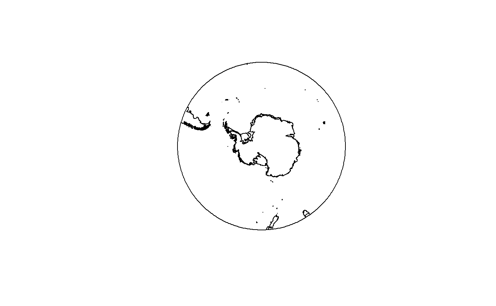

Quantarctica is a collection of Antarctic geographical datasets which works with the free, cross-platform, open-source software QGIS. It includes community-contributed, peer-reviewed data from ten different scientific themes and a professionally-designed basemap.
The quantarcticR package provides access to Quantarctica data sets for R users, without needing QGIS to be installed. R users can use these data sets with e.g. the raster, sp, or sf packages.
Installation
You can install the development version of quantarcticR from GitHub with:
remotes::install_github("SCAR-sandpit/quantarcticR")This is very much a work in progress!
Example
library(quantarcticR)
#> Quantarctica is made available under a CC-BY license.
#> If you use it, please cite it:
#> Matsuoka K, Skoglund A, Roth G (2018) Quantarctica [Data set]. Norwegian Polar Institute.
#> https://doi.org/10.21334/npolar.2018.8516e961List all available datasets:
ds <- qa_datasets()
head(ds)
#> # A tibble: 6 x 5
#> layername main_file type cached download_size
#> <chr> <chr> <chr> <lgl> <fs::bytes>
#> 1 Overview place n~ "C:\\Users\\Home\\AppData\~ shape~ FALSE 19.74K
#> 2 COMNAP listed fa~ "C:\\Users\\Home\\AppData\~ shape~ FALSE 691.92K
#> 3 Subantarctic sta~ "C:\\Users\\Home\\AppData\~ shape~ FALSE 691.92K
#> 4 SCAR Composite g~ "C:\\Users\\Home\\AppData\~ shape~ FALSE 329.05M
#> 5 IBO-IOC GEBCO Fe~ "C:\\Users\\Home\\AppData\~ shape~ FALSE 1.25M
#> 6 IBO-IOC GEBCO Fe~ "C:\\Users\\Home\\AppData\~ shape~ FALSE 1.25MFetch one and plot it:
res <- qa_get("ADD Simple basemap", verbose = TRUE)
#>
#> Thu Feb 21 11:47:40 2019
#> Synchronizing dataset: ADD Simple basemap
#> Source URL http://quantarctica.tpac.org.au/Quantarctica3/Miscellaneous/SimpleBasemap/
#> --------------------------------------------------------------------------------------------
#>
#> this dataset path is: C:\Users\Home\AppData\Local\Temp\Rtmpyg8I0r\quantarcticR-cache/Miscellaneous//SimpleBasemap
#> visiting http://quantarctica.tpac.org.au/Quantarctica3/Miscellaneous/SimpleBasemap/ ... 9 download links, 0 links to visit done.
#> downloading file 1 of 9: http://quantarctica.tpac.org.au/Quantarctica3/Miscellaneous/SimpleBasemap/ADD_DerivedLowresBasemap.cpg ... done.
#> downloading file 2 of 9: http://quantarctica.tpac.org.au/Quantarctica3/Miscellaneous/SimpleBasemap/ADD_DerivedLowresBasemap.dbf ... done.
#> downloading file 3 of 9: http://quantarctica.tpac.org.au/Quantarctica3/Miscellaneous/SimpleBasemap/ADD_DerivedLowresBasemap.prj ... done.
#> downloading file 4 of 9: http://quantarctica.tpac.org.au/Quantarctica3/Miscellaneous/SimpleBasemap/ADD_DerivedLowresBasemap.qix ... done.
#> downloading file 5 of 9: http://quantarctica.tpac.org.au/Quantarctica3/Miscellaneous/SimpleBasemap/ADD_DerivedLowresBasemap.shp ... done.
#> downloading file 6 of 9: http://quantarctica.tpac.org.au/Quantarctica3/Miscellaneous/SimpleBasemap/ADD_DerivedLowresBasemap.shx ... done.
#> downloading file 7 of 9: http://quantarctica.tpac.org.au/Quantarctica3/Miscellaneous/SimpleBasemap/ADD_DerivedLowresBasemap.txt ... done.
#> downloading file 8 of 9: http://quantarctica.tpac.org.au/Quantarctica3/Miscellaneous/SimpleBasemap/ADD_DerivedLowresBasemap_Subantarctic.txt ... done.
#> downloading file 9 of 9: http://quantarctica.tpac.org.au/Quantarctica3/Miscellaneous/SimpleBasemap/ADD_General.txt ... done.
#>
#> Thu Feb 21 11:47:47 2019 dataset synchronization complete: ADD Simple basemap
library(raster)
#> Warning: package 'raster' was built under R version 3.5.2
#> Loading required package: sp
plot(res)
See also
RQGIS provides an R-QGIS interface, via Python middleware.